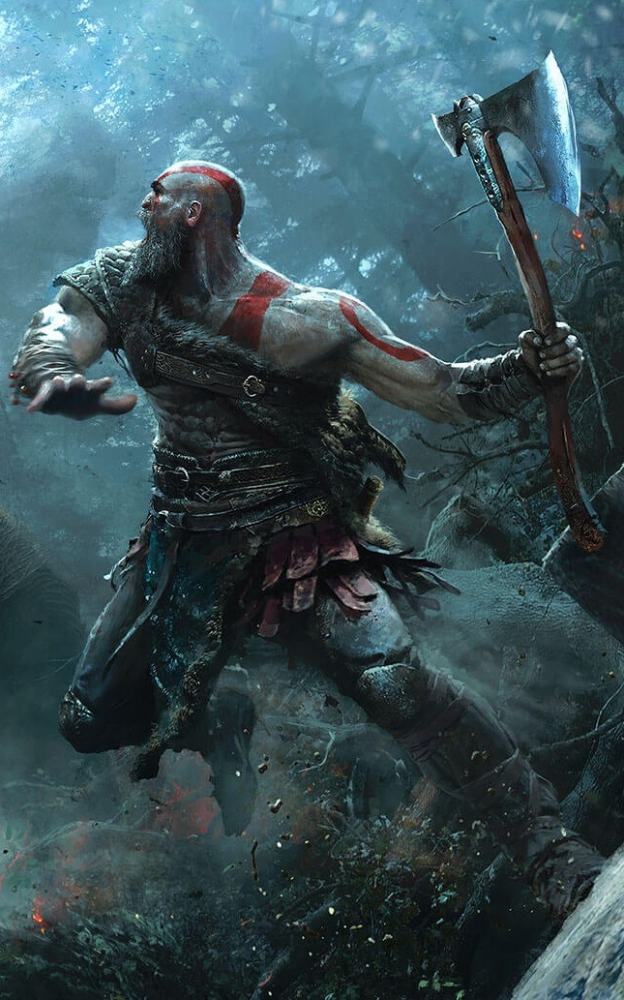

La mitología es un conjunto de relatos, creencias y tradiciones que se originan en una cultura particular y que suelen explicar el origen del mundo, los fenómenos naturales, la creación de los dioses y las interacciones entre estos y los humanos. Estas narrativas mitológicas son una parte fundamental de la historia de la humanidad y han influido en la forma en que las sociedades comprenden el mundo que les rodea y sus propias creencias.
La mitología se manifiesta en diversas formas, desde mitos orales transmitidos de generación en generación hasta textos escritos, obras de arte, rituales religiosos y festivales culturales. Cada cultura tiene su propio conjunto de mitos y dioses que reflejan sus valores, miedos y aspiraciones.
La mitología no se limita a una sola cultura o región, ya que cada civilización ha desarrollado su propia mitología única. Ejemplos notables incluyen la mitología griega con sus dioses como Zeus y Atenea, la mitología nórdica con Odin y Thor, y la mitología egipcia con Ra y Osiris. A menudo, estos mitos se utilizaban para explicar eventos naturales, justificar sistemas de gobierno y proporcionar enseñanzas morales.
La mitología griega es una de las más conocidas y estudiadas en el mundo, y sus dioses y héroes han dejado una huella duradera en la literatura, el arte y la cultura occidental. Algunos aspectos destacados incluyen:
Dioses principales: La jerarquía de los dioses griegos está encabezada por Zeus, el dios del trueno y el rey de los dioses. Otros dioses notables incluyen a Hera, su esposa y diosa del matrimonio; Atenea, la diosa de la sabiduría y la estrategia; y Apolo, el dios de la música y el sol, entre otros.
Héroes: La mitología griega está llena de héroes legendarios que realizaban hazañas heroicas. Algunos de los más famosos son Heracles (conocido como Hércules en la mitología romana), Teseo y Perseo. Sus aventuras han sido fuente de inspiración para innumerables historias y películas.
Mitos famosos: La Guerra de Troya, el mito de Prometeo y el rapto de Perséfone son solo algunos ejemplos de los mitos griegos más conocidos. Estas historias a menudo se utilizaban para explicar eventos naturales, justificar sistemas de gobierno y proporcionar enseñanzas morales.
Dioses principales: En la mitología nórdica, Odin es el principal dios, conocido por su sabiduría y su búsqueda constante de conocimiento. Thor, el dios del trueno, es otro personaje destacado, conocido por su fuerza y valentía. Loki es el travieso dios del engaño, mientras que Freyja es la diosa del amor y la fertilidad.

Ragnarök: Una característica única de la mitología nórdica es la profecía del Ragnarök, que describe el fin del mundo. En esta épica batalla final, los dioses luchan contra los gigantes y otras criaturas malignas en un enfrentamiento que marca el destino del universo.
Mitos y leyendas: La creación del mundo a partir del cuerpo del gigante Ymir, la búsqueda del martillo de Thor y las historias sobre héroes como Sigurd y Beowulf son ejemplos fascinantes de la mitología nórdica. Estas historias a menudo exploran temas de honor, destino y la lucha entre el bien y el mal.
La mitología nórdica, también conocida como mitología escandinava o germánica, es un rico conjunto de creencias y narraciones que se desarrollaron en las culturas antiguas del norte de Europa, particularmente en regiones como Escandinavia e Islandia. A diferencia de otras mitologías, como la griega o la egipcia, la mitología nórdica es notable por su enfoque en un mundo sombrío y fatalista, donde los dioses y los seres humanos están destinados a enfrentar un destino inexorable.
Los dioses nórdicos son figuras icónicas en esta mitología. Odin, el principal dios, es conocido por su búsqueda constante de sabiduría y su papel como líder de los dioses. Thor, el dios del trueno, es famoso por su fuerza y su martillo mágico, el Mjolnir. Loki, un dios travieso y astuto, a menudo causa problemas con sus travesuras.
Una característica única de la mitología nórdica es la profecía de Ragnarök, que es el apocalipsis nórdico. En Ragnarök, los dioses luchan en una batalla épica contra gigantes, monstruos y otras fuerzas malignas. Aunque parece un final catastrófico, también se interpreta como un ciclo de renovación y regeneración, donde el mundo renace después de la destrucción.
La mitología nórdica está llena de héroes legendarios que realizan hazañas heroicas en un mundo lleno de desafíos sobrenaturales. Sigurd, Beowulf y Hermod son algunos de los personajes más destacados que se enfrentan a monstruos, dragones y otras amenazas.
Esta mitología ha dejado una marca indeleble en la cultura moderna. Los personajes nórdicos, como Thor y Loki, son reconocidos en todo el mundo gracias a su incorporación en el universo de superhéroes de Marvel. Además, las historias y temas de la mitología nórdica siguen influyendo en la literatura, el cine y la televisión contemporáneos, donde se exploran valores como la valentía, la lealtad y la creencia en un destino inexorable conocido como "wyrd".
La mitología nórdica es un sistema de creencias fascinante y complejo que refleja la mentalidad de las antiguas culturas del norte de Europa. Sus dioses, héroes y leyendas continúan siendo una fuente de inspiración y una parte importante de la herencia cultural de la humanidad, además de proporcionar una visión única de un mundo sombrío y misterioso.